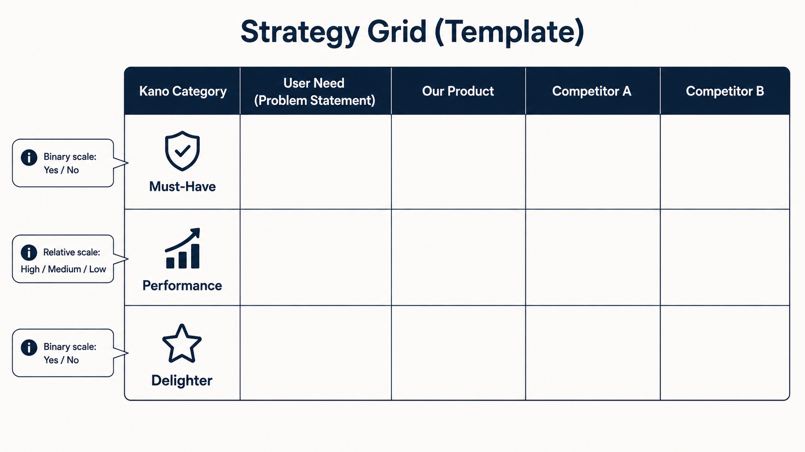
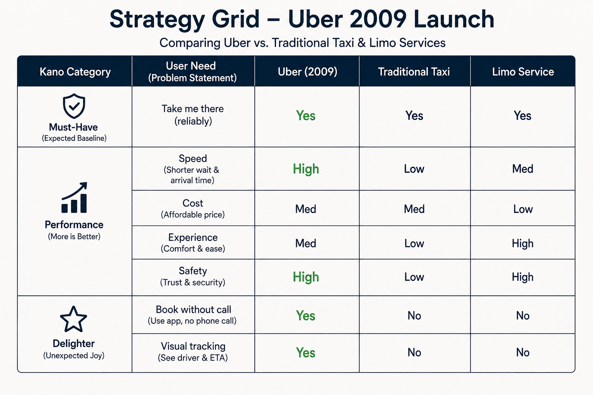
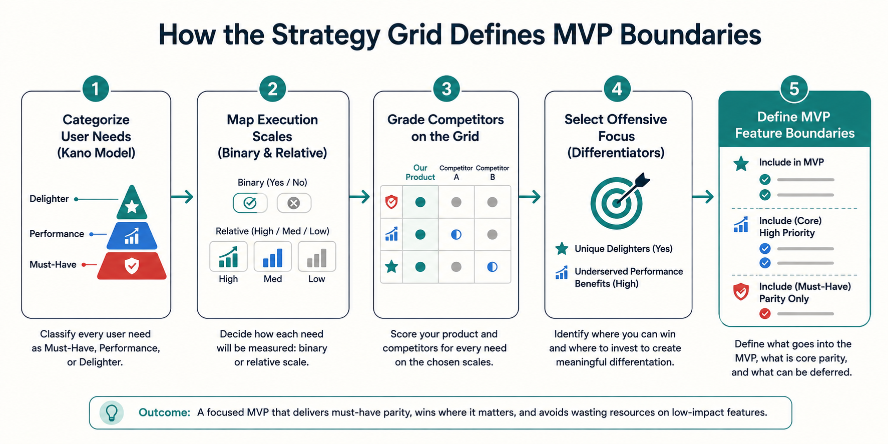

Your goal
Map your product's performance benefits and delighters against key competitors on a Strategy Grid, identify points of parity and differentiation, and decide where to play offense to define initial MVP boundaries.
Lecture overview
This lecture covers the sixth practical exercise of the course: building a **Product Strategy Grid**. It teaches how to map your product's performance and delighters against primary competitors to identify points of differentiation.
Central argument
Product strategy requires making hard choices about where to focus limited engineering resources; a product team cannot be the best at everything. By mapping customer needs onto a Strategy Grid alongside competitors, PMs can identify underserved performance benefits and unique delighters to play offense and win market share. Meanwhile, the team must maintain defensive parity on must-haves without over-engineering them. This visual positioning tool prevents scope creep and defines the exact feature boundaries required to launch a successful MVP.
1. What is the Product Strategy Grid?
The Product Strategy Grid is a competitive mapping tool that matches your Kano needs against competitors. For existing products, it reveals why users choose your brand (points of differentiation). For new products, it defines the baseline value required to compete (points of parity) and opportunities to stand out.

2. Structuring Grid Scales
The grid uses two different scales to preserve grading clarity:
- Binary Scale (Yes / No): Applied to Must-Haves and Delighters. You either have the feature or you do not.
- Relative Scale (High / Medium / Low): Applied to Performance benefits. Grades the quality of execution relative to competitors.
3. Case Study: Uber's 2009 Strategy Grid
In 2009, Uber positioned itself against traditional Taxis (cheap but slow and low quality) and limo Car Services (high quality but expensive and slow to book). Uber played offense by offering booking speeds and safety levels that outperformed taxis, price parity with taxis, and two unique mobile delighters (visual tracking and one-click booking).

4. Playing Offense vs. Playing Defense
Product strategy requires trade-offs. You cannot score "High/Yes" across the board. PMs must play **defense** on must-haves (parity Yes) and non-core performance areas (maintain Medium/Low). PMs must play **offense** on underserved performance areas (grade High) and unique delighters (Yes) to establish points of differentiation.
5. From Strategy Grid to MVP Bounds
The completed grid defines the boundaries of your Minimum Viable Product (MVP). It isolates the mandatory must-haves for parity, the selected high-value performance differentiators, and the core delighter hook, while slicing away non-essential features to ensure a fast, targeted release.
Practical Product Management example
Situation
A PM at a collaborative document editor startup is planning the MVP. The engineering team is divided: some developers want to optimize local document loading speeds to sub-10ms (High Performance), while others want to build custom audio-calling rooms inside the editor (Delighter).
Decision
The PM facilitates a session to build a Product Strategy Grid compared to the dominant competitor, Google Docs. Text formatting and document saving are Must-Haves (Parity required: Yes). Document loading speed: Google Docs is High (very fast); the PM decides to target Medium (fast enough, matching Google Docs) rather than wasting 3 months of dev time chasing sub-10ms speeds. Real-time co-authoring: Google Docs is High; parity required: High. Markdown autocomplete with git-branch version control integration (Delighter): Google Docs is No (has basic history, but no git integration); the PM targets Yes here. The PM halts the audio-calling room project and the sub-10ms speed optimization. They focus the roadmap on text editing basics, real-time collaboration parity, and the git version control integration.
Reasoning
Google Docs dominates on speed and scale. Competing directly on raw compiler/loading speeds (trying to go "high, high, high") would exhaust resources without winning customers. By keeping loading speed at Medium (parity) and version control at Yes (differentiation), the startup targets software developers who value git versioning over minor loading speed increases.
Consequence
The MVP launches within 4 months. While document load times are average, early adopter developers rave about the git-version control integration (the delighter). The startup converts 15% of beta sign-ups into paid users within the first quarter.
Transferable lesson
Never compete on a competitor's terms if they have a structural advantage. Use the Strategy Grid to identify where to concede (maintaining parity) and where to play offense (differentiation). This protects your engineering bandwidth and clarifies your product's unique value.
Common misunderstandings
"We should try to beat our competitors in every category"
Correction: This is the recipe for product failure. A startup has limited capital and engineering bandwidth. If you attempt to match limo services on luxury, taxis on price, and tech apps on booking speed, you will build an over-complicated, expensive product that fails to launch. Strategy is about choosing what not to do.
"Points of parity are not important; we should only build delighters"
Correction: Delighters capture attention, but must-haves retain users. If your ride-sharing app has a beautiful map tracking interface (delighter) but the car never arrives or lacks seat belts (must-have parity failure), the user will uninstall the app immediately.
"We can use the Strategy Grid as a static sales comparison chart"
Correction: The grid is an internal strategic tool, not marketing collateral. Marketing charts often pretend the company is "High" in every category and competitors are "Low". The PM's Strategy Grid must be honest; admitting where your product is Medium or **Low** is essential to focus resource allocation.
Key concepts and definitions
- Strategy Grid: A Kano-based competitive matrix comparing your product's performance and delighters against key competitors.
- Point of Parity: A feature or capability where your product matches the competitor's execution to remain viable.
- Point of Differentiation: A unique performance benefit or delighter where your product outperforms competitors to win users.
- Offensive Strategy: Allocating engineering resources to excel in underserved performance metrics and unique delighters.
- Defensive Strategy: Maintaining basic quality on must-haves and average performance without over-engineering.
Key takeaways
- Strategy is about trade-offs; you cannot be the best at everything, so choose where to win and where to concede.
- Structure the Strategy Grid using binary scales (Yes/No) for must-haves and delighters, and relative scales (High/Med/Low) for performance.
- Map primary competitors (e.g. Uber 2009 vs. Taxis vs. Car Services) to visualize points of parity and differentiation.
- Play offense on underserved performance benefits (like Uber's safety and booking speed) to stand out.
- Play defense on must-haves; satisfy them to achieve parity (Yes), but do not waste bandwidth exceeding basic expectations.
- Deploy unique delighters (like Uber's 2009 map tracking) to provide the primary value hook for early adopters.
- Define MVP bounds using the grid; strip out non-essential performance metrics to launch quickly.
- Original Uber price strategy targeted cost parity with taxis (Medium), though surge pricing later modified this balance.
Visual summary

One-minute review
Map Competitors: List your must-haves, performance metrics, and delighters. Rate your product and your competitors on binary (Yes/No) and relative (High/Med/Low) scales. Focus Your Offense: Choose 1–2 performance benefits to dominate (High) and 1–2 unique delighters (Yes). Accept Defense: Settle for average execution (Medium/Low) in non-core categories, and satisfy must-haves without over-engineering them.
Interactive Practice
Examine the competitor positioning for Uber (2009). Click on the tabs below to highlight how Uber competed against traditional taxis and car services.
Uber (2009) Strategy
Offensive Performance: Ride speed (High), passenger safety tracking (High).
Defensive Parity: Price (Medium - matching taxis), luxury experience (Medium - comfortable but not a limousine).
Unique Delighters: Map tracking (Yes), cashless mobile booking (Yes).
Traditional Taxis Strategy
Weaknesses: Speed to book/arrive (Low), customer experience/smell (Low), passenger safety trust (Low).
Baseline Parity: Price (Medium), Take me there must-have (Yes).
Delighters: None (No map, phone calls required).
Upscale Car Services (Limo) Strategy
Strengths: Passenger safety (High), luxury experience (High).
Weaknesses: Price affordability (Low), booking speed (Medium - requires hours advance notice).
Delighters: None (No interactive map, manual dispatcher calls).
Apply Strategy Grid tradeoffs. Review the scenario below and select the correct strategic path.